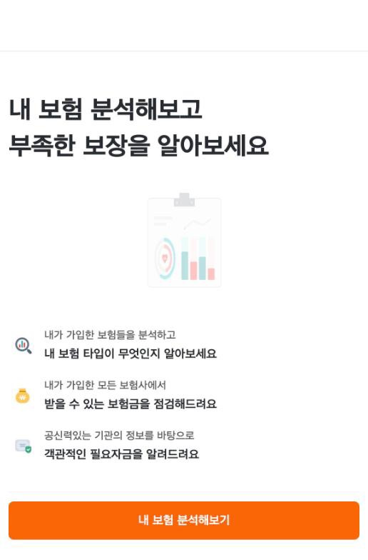
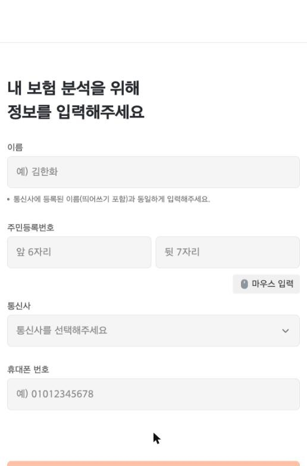
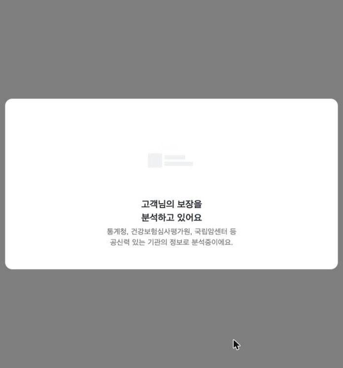
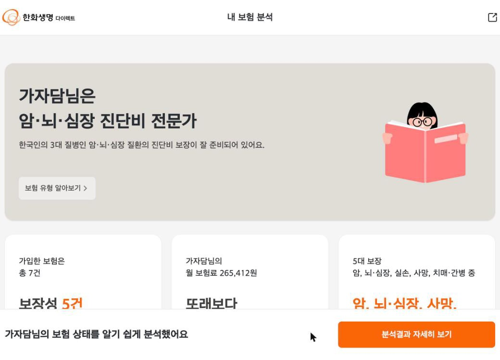
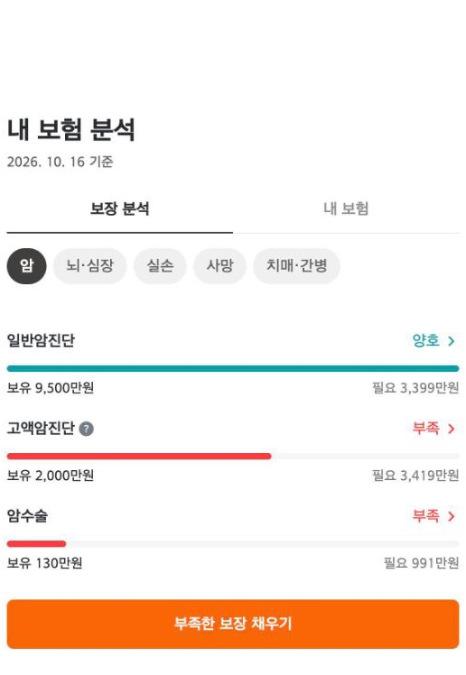
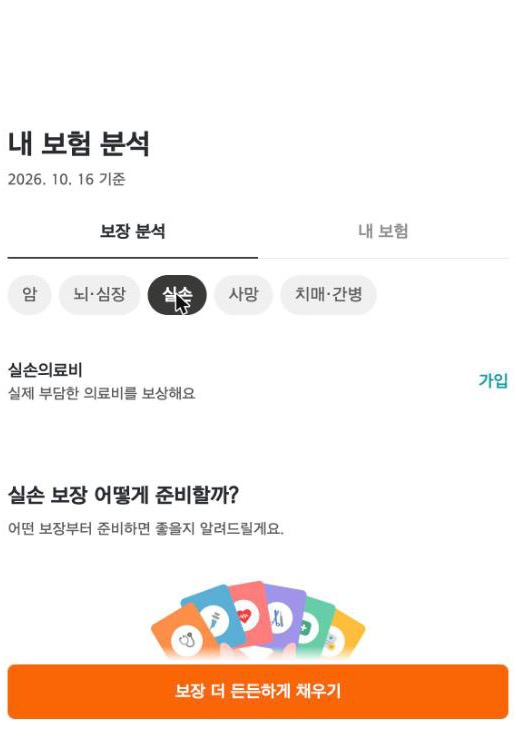
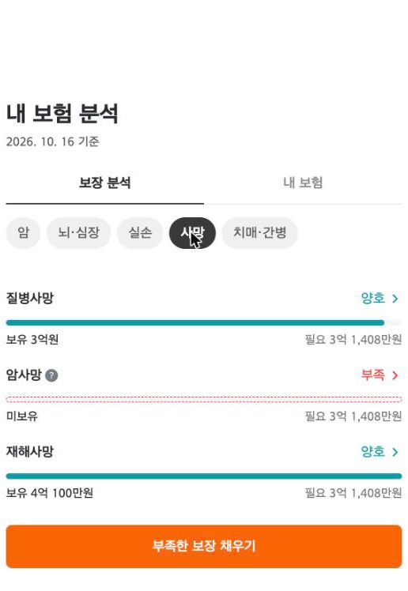
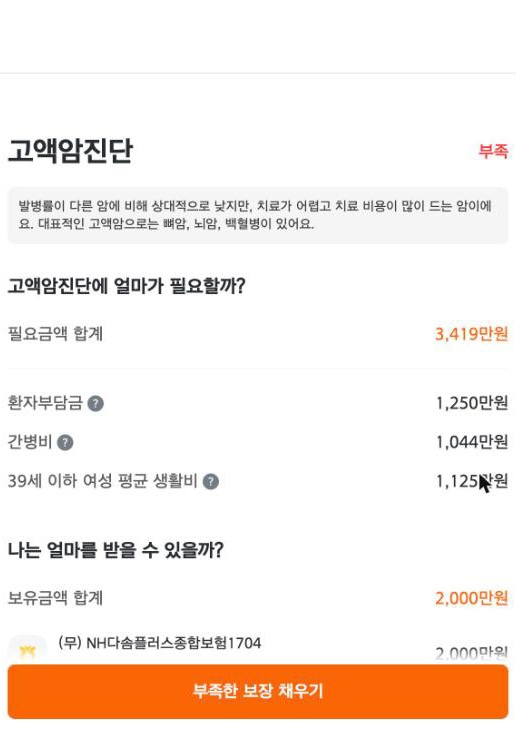
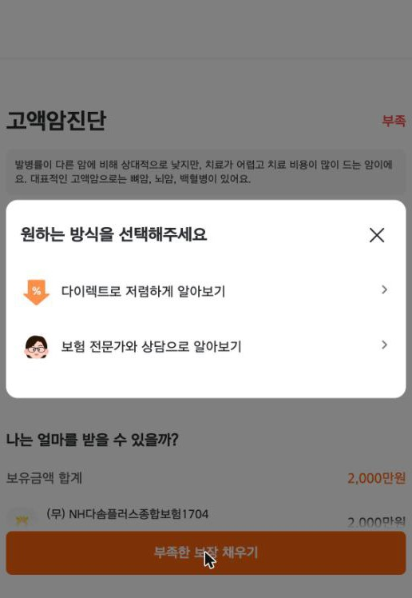
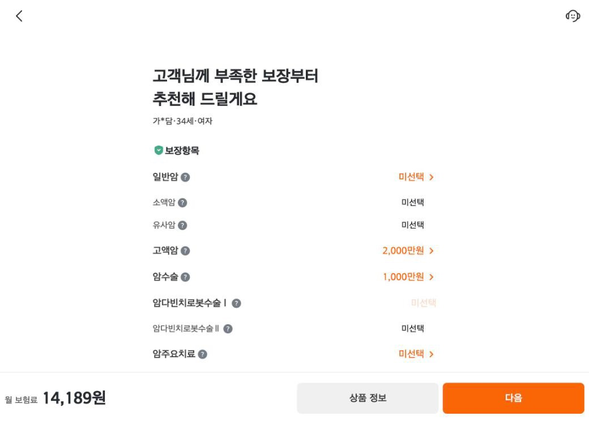

화면으로 보는 흐름
진입부터 본인인증, 분석, 리포트, 상품 추천까지 이어지는 고객 화면입니다.










스테이징 환경의 테스트 데이터 화면입니다.
원천 시스템 전환 — 무배포 컷오버·롤백
개요
보장분석 원천 데이터를 제공하던 기존 시스템이 종료되고 새 시스템으로 바뀌면서 리포트 구조(3단 → 2단 트리), 보장 코드 체계, 실손 항목 통합까지 달라졌습니다.
담당 업무
- 신·구 원천을 Strategy 패턴으로 이원화하고 분기는 한 곳에서만 수행
- 컷오버 시각 설정값 하나로 전환·롤백
- 캐시 키에 모드·코드 버전을 넣어 전환 시 자동 분리
- 롤백해도 동작하도록 구 시스템 경로 보전(구 필드명 허용, 구 실손 코드 정규화)
- 앱 API v1·v2 이원화로 구버전 앱 하위 호환
주요 성과
코드 배포 없이 설정값만으로 전환·롤백할 수 있고, 전환·롤백 때 캐시를 수동으로 정리할 필요가 없습니다. 2026.10.19 오픈.
신규 산출 오케스트레이션
개요
보험 산출은 기본정보 생성 → 필요금액 저장 → 자사·타사 계약 산출 → 결과 조회로 이어지는 여러 단계의 외부 호출입니다.
담당 업무
- 자사·타사 산출 체인 병렬 실행
- 계약이 많은 고객은 배치(기본 5건)로 나눠 호출
- 시작 기준 90초 데드라인으로 새 호출 차단
- 전용 스레드풀로 다른 API와 격리
- 산출이 시작됐으면 결과 조회는 반드시 수행(부분 실패여도 만든 결과는 읽음)
주요 성과
일부 체인이 실패해도 결과를 응답하고, 계약이 잡힌 부분 결과는 캐시해 실패가 구조적인 고객이 매번 90초 재산출을 반복하는 루프를 차단했습니다.
같은 고객 산출이 4번 돌던 문제
Troubleshooting증상
스테이징에서 산출 요청 1건이 정확히 240초 만에 500으로 끝났고, 그 사이 같은 고객의 산출이 원천 시스템에서 여러 번 실행됐습니다.
원인 분석
240초 = 60초 × 4. 앞단 게이트웨이가 60초 동안 응답이 없으면 같은 요청을 다시 보내고 있었습니다. 산출은 최대 90초까지 걸리기 때문에 재시도가 도착할 때 첫 산출은 아직 진행 중이었고, 서버는 이를 새 요청으로 보고 재시도마다 산출을 처음부터 다시 시작했습니다.
- 0초요청 → 산출 ①
- 60초재시도 → 산출 ②
- 120초재시도 → 산출 ③
- 180초재시도 → 산출 ④
- 240초게이트웨이 500
해결
- 먼저 온 요청이 Redis SET NX로 '진행 중' 표시(소유자 토큰 + TTL)를 잡고 산출
- 나중 요청(재시도·연타·앱/웹 동시 진입)은 산출하지 않고 기다렸다가, 그 소유자가 남긴 결과만 받아 응답 — 기다리기 전부터 있던 낡은 캐시는 받지 않음
- 표시 해제는 Lua 스크립트로 값을 비교해 삭제 — 다른 요청의 표시를 지우지 않음
- 소유자가 결과 없이 끝나거나 Redis에 장애가 나면 대기 요청이 직접 산출(fail-open) — 가드 때문에 사용자가 실패를 받지 않게 함
- 알림톡·쿨다운 마커는 소유자만 남기도록 해, 코드리뷰에서 찾은 중복 발송·마커 덮어쓰기 문제까지 막음
결과
같은 고객 산출 4회 → 1회로 줄어 원천 시스템 부하가 줄었습니다. 60초에 도착한 재시도가 70~90초에 끝난 산출 결과를 받아 응답하므로, 예전엔 버려지던 느린 산출도 사용자에게 전달됩니다.
배운 점 — 타임아웃은 우리 서버 하나가 아니라 게이트웨이 → 서버 → 원천 시스템 체인 전체로 맞춰 봐야 합니다.
캐시와 외부 호출량 관리
담당 업무
- 리포트 1시간 캐시, 장애로 생긴 빈 결과는 캐시하지 않음
- 계약 0건 고객 10분 재산출 쿨다운
- 상품 판매여부를 상품코드 단위 공유 캐시 + 매시 정각 갱신(장애 응답은 저장하지 않음)
- 앱 진입 시 이력조회 중복 제거
- '이력 없음' 60초 단기 표시
주요 성과
판매여부 조회는 고객 수와 무관하게 상품당 시간당 1회, 앱 진입 이력조회는 2회 → 1회로 줄었습니다.
판정·추천 규칙
담당 업무
- 5대 보장 준비율로 양호·부족 판정, 실손은 가입 여부로 판정
- 보험 준비 유형(A·B·C) 판정에서 실손 제외
- 상품 추천은 판매중이 확인될 때만 생성(fail-closed)
- 사망 추천은 질병사망 기준
주요 성과
기획 확정 사항을 날짜·이유와 함께 코드와 문서에 남겨 같은 논의가 반복되지 않게 했습니다.
보안과 오픈 전 검증
담당 업무
- 다른 사람에게 재배정될 수 있는 비회원 고객번호는 이력 재사용 금지
- 조회 경로의 회원 판정을 한 곳으로 통일(토큰과 세션의 고객번호 일치까지 확인)
- 인증 토큰 전환기(구형·신형 토큰) 이원화 대응
- 토큰 원문 로그 차단
주요 성과
오픈 전 브랜치 전체를 4개 관점의 AI 코드리뷰로 병렬 점검해 HIGH 6건을 포함한 30여 건을 해소했습니다.